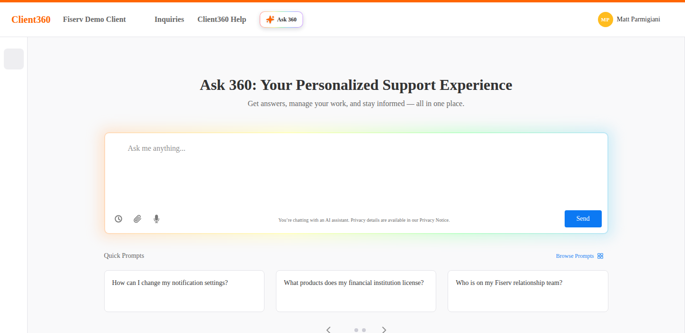

Hi, I'm Casey.
Right now that means Ask360, an AI support assistant used by financial institutions. I write the requirements behind it and run the research with the clients who use it.
Requirements and conversation design for an AI assistant that turns search-then-retype support into one journey: describe the problem, get documentation for the products you actually license, open an inquiry with the context already attached.

55 interviews and 400+ survey responses across four rounds, before and after launch. The research cut the parts of the feature that didn't hold up.